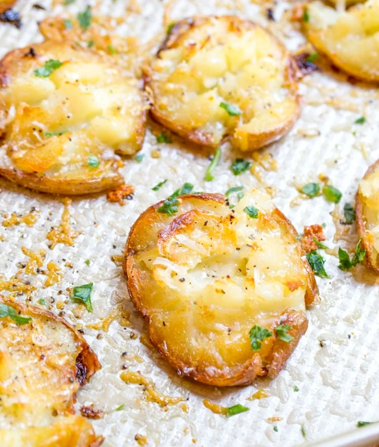

Cartofi la cuptor cu usturoi si branza

Ingrediente
-
6-7 cartofi, tăiaţi în jumătate
-
5-6 linguri ulei
-
4 căţei de usturoi, pisaţi
-
100 g parmezan, ras
-
pătrunjel proaspăt tocat, după gust
-
sare
-
piper
Pasi de preparare
- Preîncălzeşti cuptorul la 220 °C
- Ungi o tavă întinsă cu 3 linguri de ulei
- Aşezi cartofii în tavă pe partea cu miezul şi îi dai la cuptor 20-25 de minute.
- Îi întorci pe partea cealaltă şi îi zdrobeşti uşor cu o lingură.
- Îi ungi cu restul de ulei
- Amesteci parmezanul cu usturoiul şi îl presari peste cartofi
- Condimentezi cu sare şi piper, după gust. Dai la cuptor încă 20 de minute.
- Serveşti cu pătrunjel.